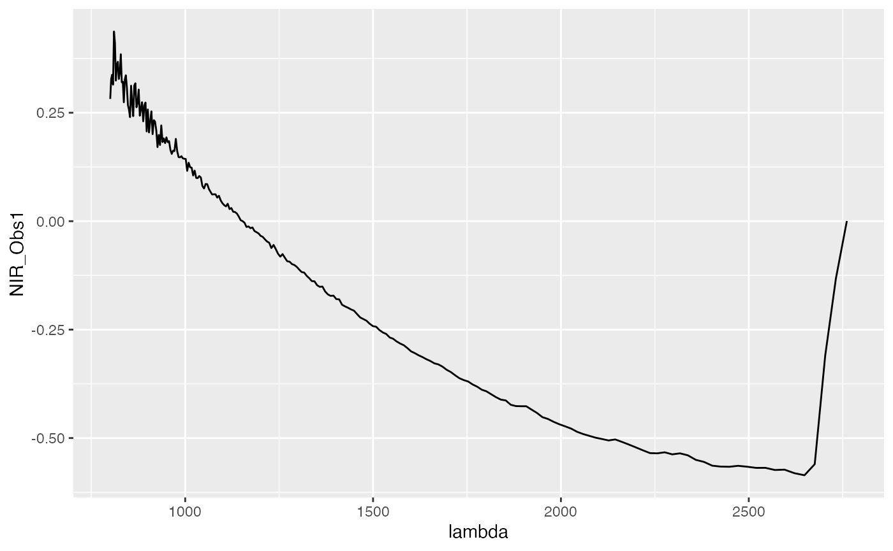

In (Hooker, 2017) it is defined, that “Functional data is multivariate data with an ordering on the dimensions”. It means that this type of data consists of curves varying over a continuum, such as time, frequency, or wavelength. Thus, functional data is often present when measurements at various time points are analyzed. The curves of functional data are usually interdependent, which means that the measurement at a point, e.g., \(t_{i + 1}\), depends on measurements at some other points, e.g., \({t_1, ..., t_i}; i \in \mathbb{N}\).
As the most well-known machine learning techniques generally do not emphasize the interdependence between features, they are often not well suited for such tasks. Application of these techniques can lead to poor performance. Functional data analysis, on the other hand, tries to address this issue either by using algorithms particularly tailored to functional data or by transforming the functional covariates into a continuum (e.g., time, wavelength) nondependent feature space. For a more in-depth introduction to functional data analysis see, e.g. When the data are functions (Ramsay, J.O., 1982).
Each observation of a functional covariate in the data is an evaluation of a functional, i.e., it consists of measurements of a scalar value at various time (wavelength or another type of continuum) points. A single observation might then look like this:
# Plot NIR curve for first observarion
data(fuelSubset, package = "FDboost")
# NIR_Obs_1 contains the measurements for NIR of the first functional covariate and
# lambda indicates the wavelength points the data was measured at.
df = data.frame("NIR_Obs1" = fuelSubset$NIR[1, ],
"lambda" = fuelSubset$nir.lambda)
ggplot(df) +
geom_line(aes(y = NIR_Obs1, x = lambda))
Note: this is an example of spectroscopic data. NIR stands for “near infra-red radiation (light)”, UVVIS (you will find this below) – “ultra-violet and visible radiation (light)”, and in spectroscopy it is common to denote wavelengths as “lambda” \((\lambda)\). For the sake of simplicity, you can imagine the wavelengths as adjacent visible and invisible “colors” expressed as numbers.
How to model functional data?
There are two commonly used approaches for analyzing functional data.
- Directly analyze the functional data using a learner that is suitable for functional data on a task. Those learners have the prefixes classif.fda and regr.fda.
For more info on learners see fda learners. For this purpose, the functional data has to be saved as a matrix column in the data frame used for constructing the task. For more info on functional tasks, consider the following section.
- Transform the task into a format suitable for standard classification or regression learners.
This is done by extracting non-temporal/non-functional features from the curves. Non-temporal features do not have any interdependence between each other, similarly to features in traditional machine learning. This is explained in more detail below.
Creating a task that contains functional features
The first step is to get the data in the right format. mlr expects a base::data.frame which consists of the functional features and the target variable as input. Functional data in contrast to numeric data have to be stored as a matrix column in the data frame. After that, a task that contains the data in a well-defined format is created. The tasks come in different flavors, such as makeClassifTask() and makeRegrTask(), which can be used according to the class of the target variable.
In the following example, the data is first stored as matrix columns using the helper function makeFunctionalData() for the fuelSubset data from package FDboost.
The data is provided in the following structure:
str(fuelSubset)
## List of 7
## $ heatan : num [1:129] 26.8 27.5 23.8 18.2 17.5 ...
## $ h2o : num [1:129] 2.3 3 2 1.85 2.39 ...
## $ nir.lambda : num [1:231] 800 803 805 808 810 ...
## $ NIR : num [1:129, 1:231] 0.2818 0.2916 -0.0042 -0.034 -0.1804 ...
## $ uvvis.lambda: num [1:134] 250 256 261 267 273 ...
## $ UVVIS : num [1:129, 1:134] 0.145 -1.584 -0.814 -1.311 -1.373 ...
## $ h2o.fit : num [1:129] 2.58 3.43 1.83 2.03 3.07 ...- heatan is the target variable, in this case, a numeric value.
- h2o is an additional scalar variable.
- NIR and UVVIS are matrices containing the curve data. Each column corresponds to a single wavelength the data was sampled at. Each row indicates a single curve. NIR was measured at 231 wavelength points, while UVVIS was measured at 129 wavelength points.
-
nir.lambda and uvvis.lambda are numeric vectors of length 231 and 129 indicate the wavelength points the data was measured at. Each entry corresponds to one column of NIR and UVVIS respectively. For now, we ignore this additional information in
mlr.
Our data already contains functional features as matrices in a list. In order to demonstrate how such a matrix can be created from arbitrary numeric columns, we transform the list into a data frame with a set of numeric columns for each matrix. These columns refer to the matrix columns in the list, i.e., UVVIS.1 is the first column of the UVVIS matrix.
# Put all values into a data frame
df = data.frame(fuelSubset[c("heatan", "h2o", "UVVIS", "NIR")])
str(df[, 1:5])
## 'data.frame': 129 obs. of 5 variables:
## $ heatan : num 26.8 27.5 23.8 18.2 17.5 ...
## $ h2o : num 2.3 3 2 1.85 2.39 ...
## $ UVVIS.1: num 0.145 -1.584 -0.814 -1.311 -1.373 ...
## $ UVVIS.2: num -0.0111 -2.0467 -1.053 -1.2445 -1.8826 ...
## $ UVVIS.3: num 0.0372 -1.5695 -0.9381 -1.0649 -1.4016 ...Before constructing the task, the data is again reformatted therefore it contains column matrices. This is done by providing a list fd.features, that identifies the functional covariates. All columns not mentioned in the list are kept as-is. In our case, the column indices 3:136 correspond to the columns of the UVVIS matrix. Alternatively, we could also specify the respective column names.
library(mlr)
# fd.features is a named list, where each name corresponds to the name of the
# functional feature and the values to the respective column indices or column names.
fd.features = list("UVVIS" = 3:136, "NIR" = 137:367)
fdf = makeFunctionalData(df, fd.features = fd.features)makeFunctionalData() returns a base::data.frame, where the functional features are contained as matrices.
str(fdf)
## 'data.frame': 129 obs. of 4 variables:
## $ heatan: num 26.8 27.5 23.8 18.2 17.5 ...
## $ h2o : num 2.3 3 2 1.85 2.39 ...
## $ UVVIS : num [1:129, 1:134] 0.145 -1.584 -0.814 -1.311 -1.373 ...
## ..- attr(*, "dimnames")=List of 2
## .. ..$ : NULL
## .. ..$ : chr [1:134] "UVVIS.1" "UVVIS.2" "UVVIS.3" "UVVIS.4" ...
## $ NIR : num [1:129, 1:231] 0.2818 0.2916 -0.0042 -0.034 -0.1804 ...
## ..- attr(*, "dimnames")=List of 2
## .. ..$ : NULL
## .. ..$ : chr [1:231] "NIR.1" "NIR.2" "NIR.3" "NIR.4" ...Now with a data frame containing the functionals as matrices, a task can be created:
# Create a regression task, classification tasks behave analogously
# In this case we use column indices
tsk1 = makeRegrTask("fuelsubset", data = fdf, target = "heatan")
tsk1
## Supervised task: fuelsubset
## Type: regr
## Target: heatan
## Observations: 129
## Features:
## numerics factors ordered functionals
## 1 0 0 2
## Missings: FALSE
## Has weights: FALSE
## Has blocking: FALSE
## Has coordinates: FALSEConstructing a learner
For functional data, learners are constructed using makeLearner("classif.<R_method_name>") or makeLearner("regr.<R_method_name>") depending on the target variable.
Applying learners to a task works in two ways:
Either use a learner suitable for functional data:
# The following learners can be used for tsk1 (a regression task).
listLearners(tsk1, properties = "functionals", warn.missing.packages = FALSE)
## class name short.name
## 1 regr.FDboost Functional linear array regression boosting FDboost
## 2 regr.featureless Featureless regression featureless
## package
## 1 FDboost,mboost
## 2 mlr
## note
## 1 Only allow one base learner for functional covariate and one base learner for scalar covariate, the parameters for these base learners are the same. Also we currently do not support interaction between scalar covariates
## 2
## type installed numerics factors ordered missings weights prob oneclass
## 1 regr TRUE TRUE FALSE FALSE FALSE FALSE FALSE FALSE
## 2 regr TRUE TRUE TRUE TRUE TRUE FALSE FALSE FALSE
## twoclass multiclass class.weights featimp oobpreds functionals
## 1 FALSE FALSE FALSE FALSE FALSE TRUE
## 2 FALSE FALSE FALSE FALSE FALSE TRUE
## single.functional se lcens rcens icens
## 1 FALSE FALSE FALSE FALSE FALSE
## 2 FALSE FALSE FALSE FALSE FALSE
# Create an FDboost learner for regression
fdalrn = makeLearner("regr.FDboost")
# Or alternatively, use knn for classification:
knn.lrn = makeLearner("classif.fdausc.knn")Learners can have different properties, depending on whether they support either a single.functional or multiple functionals, i.e. multiple different sensors for the same observation.
- A learner will have the property
functionalsif it can handle one or multiple functional covariates. - A learner will have the property
single.functionalif it can handle only a single functional covariate.
We can check for those properties when selecting a leaner:
getLearnerProperties(fdalrn)
## [1] "numerics" "functionals"or use a standard learner:
In this case, the temporal structure is disregarded, and the functional data treated as simple numeric features.
# Decision Tree learner
rpartlrn = makeLearner("classif.rpart")Alternatively, transform the functional data into a non-temporal/non-functional space by extracting features before training. In this case, a standard regression- or classification-learner can be applied.
This is explained in more detail in the feature extraction section below.
Training the learner
The resulting learner can now be trained on the task created in section Creating a task above.
# Train the fdalrn on the constructed task
m = train(learner = fdalrn, task = tsk1)
p = predict(m, tsk1)
performance(p, rmse)
## rmse
## 2.181438Alternatively, learners that do not explicitly treat functional covariates can be applied. In this case, the temporal structure is completely disregarded, and all columns are treated as independent.
# Train a normal learner on the constructed task.
# Note that we get a message, that functionals have been converted to numerics.
rpart.lrn = makeLearner("regr.rpart")
m = train(learner = rpart.lrn, task = tsk1)
## Functional features have been converted to numerics
m
## Model for learner.id=regr.rpart; learner.class=regr.rpart
## Trained on: task.id = fuelsubset; obs = 129; features = 3
## Hyperparameters: xval=0Feature extraction
In contrast to applying a learner that works on a task containing functional features, the task can be converted to a standard task. This works by transforming the functional features into a non-functional domain, e.g., by extracting wavelets.
The currently supported preprocessing functions are:
- discrete wavelet transform;
- fast Fourier transform;
- functional principal component analysis;
- multi-resolution feature extraction.
In order to do this, we specify methods for each functional feature in the task in a list. In this case, we simply want to extract the Fourier transform from each UVVIS functional and the Functional PCA Scores from each NIR functional. Variable names can be specified multiple times with different extractors. Additional arguments supplied to the extract functions are passed on.
# feat.methods specifies what to extract from which functional
# In this example, we extract the Fourier transformation from the first functional.
# From the second functional, fpca scores are extracted.
feat.methods = list("UVVIS" = extractFDAFourier(), "NIR" = extractFDAFPCA())
# Either create a new task from an existing task
extracted = extractFDAFeatures(tsk1, feat.methods = feat.methods)
extracted
## $task
## Supervised task: fuelsubset
## Type: regr
## Target: heatan
## Observations: 129
## Features:
## numerics factors ordered functionals
## 264 0 0 0
## Missings: FALSE
## Has weights: FALSE
## Has blocking: FALSE
## Has coordinates: FALSE
##
## $desc
## Extraction of features from functional data:
## Target: heatan
## Remaining functional Features: 2 after extraction on 2 functional featuresWavelets
In this example, discrete wavelet feature transformation is applied to the data using the function extractFDAWavelets. Discrete wavelet transform decomposes the functional into several wavelets. This essentially transforms the time signal to a time-scale representation, where every wavelet captures the data at a different resolution. We can specify which additional parameters (i.e., the filter (a type of wavelet) and the boundary) in the pars argument. This function returns a regression task of type regr since the raw data contained temporal structure but the transformed data does not inherit temporal structure anymore. For more information on wavelets consider the documentation of wavelets::dwt. A more comprehensive guide is, for example, given here.
# Specify the feature extraction method and generate new task.
# Here, we use the Haar filter:
feat.methods = list("UVVIS" = extractFDAWavelets(filter = "haar"))
task.w = extractFDAFeatures(tsk1, feat.methods = feat.methods)
# Use the Daubechie wavelet with filter length 4.
feat.methods = list("NIR" = extractFDAWavelets(filter = "d4"))
task.wd4 = extractFDAFeatures(tsk1, feat.methods = feat.methods)Fourier transformation
Now, we use the Fourier feature transformation. The Fourier transform takes a functional and transforms it to a frequency domain by splitting the signal up into its different frequency components. A more detailed tutorial on Fourier transform can be found here. Either the amplitude or the phase of the complex Fourier coefficients can be used for analysis. This can be specified in the additional trafo.coeff argument:
# Specify the feature extraction method and generate new task.
# We use the Fourier features and the amplitude for NIR, as well as the phase for UVVIS
feat.methods = list("NIR" = extractFDAFourier(trafo.coeff = "amplitude"),
"UVVIS" = extractFDAFourier(trafo.coeff = "phase"))
task.fourier = extractFDAFeatures(tsk1, feat.methods = feat.methods)
task.fourierWrappers
Additionally we can wrap the preprocessing around a standard learner such as classif.rpart. For additional information, please consider the Wrappers section.
# Use a FDAFeatExtractWrapper
# In this case we extract the Fourier features from the NIR variable
feat.methods = list("NIR" = extractFDAFourier())
wrapped.lrn = makeExtractFDAFeatsWrapper("regr.rpart", feat.methods = feat.methods)
# And run the learner
train(wrapped.lrn, fuelsubset.task)
## Functional features have been converted to numerics
## Model for learner.id=regr.rpart.extracted; learner.class=extractFDAFeatsWrapper
## Trained on: task.id = fs.fdf; obs = 129; features = 3
## Hyperparameters: xval=0